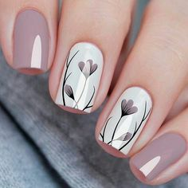
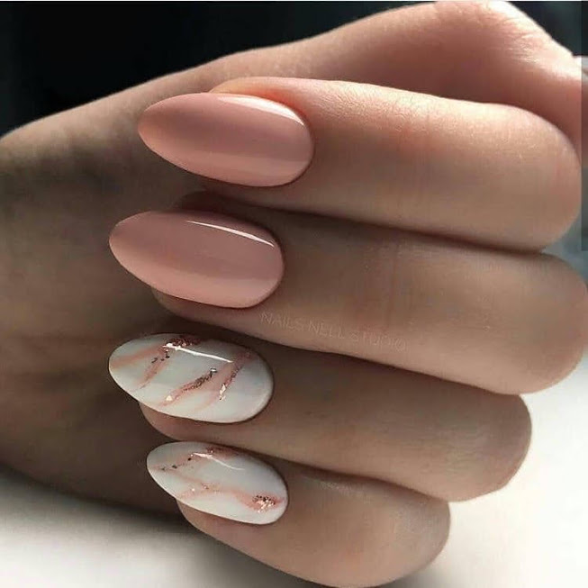
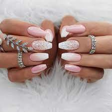
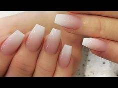

El cuidado de las uñas hablan de la personalidad de cada mujer
La manicura semipermanente es un esmaltado de secado inmediato y de larga duración que mantiene un resultado reluciente.
El Kapping consiste en aplicar una fina capa de acrílico o gel fortificador sobre la uña que actuará como una barrera protectora. Esta técnica no alarga la uña natural sino que acompaña el crecimiento de la misma y dura 20 días.
Las uñas esculpidas en polygel son extensiones artificiales de las uñas realizadas con geles de construcción, utilizando moldes para dar la forma y extensión deseada.
Se trata de unos tips fabricados con gel que cubren por completo la uña. Se adhieren con una base permanente especial y se curan con lámpara LED.
